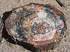

petrification

Definition: In geology, petrifaction or petrification (from Ancient Greek πέτρα (pétra) 'rock, stone') is the process by which organic material becomes a fossil through the replacement of the original material and the filling of the original pore spaces with minerals. Petrified wood typifies this process, but all organisms, from bacteria to vertebrates, can become petrified (although harder, more durable matter such as bone, beaks, and shells survive the process better than softer remains such as muscle tissue, feathers, or skin). Petrifaction takes place through a combination of two similar processes: permineralization and replacement. These processes create replicas of the original specimen that are similar down to the microscopic level.
Source: Wikipedia
Wikipedia Page (Something wrong with this association? Let us know.)
Wikidata Page (Something wrong with this association? Let us know.)